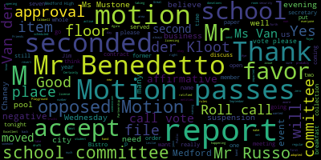

AI-generated transcript of Medford School Committee meeting September 17, 2018
English | español | português | 中国人 | kreyol ayisyen | tiếng việt | ខ្មែរ | русский | عربي | 한국인
Back to all transcripts
[Ruseau]: And now we've got to figure out where. OK, page 3 in the new notes, second paragraph down, it says that the compressors were $50,000 per compressor. The number is 15.
[Burke]: Motion to amend the minutes to be $15,000 per compressor on page 3 of the notes. It's in a couple of places. Is there a motion for approval as amended? So moved by Mr. Russo, seconded by Ms. Mustone. All those in favor?
[Mustone]: Aye.
[Burke]: All those opposed? Motion passes. Approval of bills, transfer of funds. Motion for approval by Mr. Benedetto, Mr. Russo. Second? Second by Mr. Russo. Roll call vote please.
[Unidentified]: Yes.
[Burke]: Yes. 7 in the affirmative, 0 in the negative. The motion passes. Approval of payrolls. Motion for approval by Ms. Van der Kloot, seconded by Ms. Benedetto. Roll call vote, please.
[Ruggiero]: Yes.
[Burke]: Yes, 7 in the affirmative, 0 in the negative. Motion passes. Report of secretary.
[Kreatz]: I wanted to just inform everybody during the summer, I was receiving feedback from both with the yearbook advisor, David Ambrosie. And there was a couple of students that were working with him. to implement a supplement package. I'm not sure if some of you are aware, but when the yearbook came out, there were some students that were omitted, and there were some pages that were sections of the yearbook that weren't really advertised a lot. For example, the Mustang Mall and some of the vocational programs. So over the summer, Dave Ambrosie and a couple of students, which I'll name, worked together to help put the supplement together. And last Friday, or last Thursday and last Friday, the supplement was mailed to all of the 2018 class of 2018 seniors. And I brought it in, you know, I can share it and everybody can take a look at it. And I want to give a heartfelt thank you because what David did was he actually hand delivered the yearbook to some families and actually brought it to their house to make sure they got it. And he's just really, he did a great job We stayed in contact. He shared some of the proofs with me, and I got to see them before they went to print. And so I want to thank Dave Ambrosie, some of the students, Mia McGillicuddy, Avro Sequeria, I hope I pronounced it correctly, Carla DeStefano. And I just wanted to say thank you very much. And one minor update, I know I told everybody in the email communication the slide was The slide arrived for the Columbus School. Right now, the Parks Department is working with Game Time because they're trying to fit it into the old slide. So they have been going back and forth with Game Time to find a solution for the slide. And one last update, and I plan to put this on the agenda coming up for the next meeting. Over the summer, I mentioned to everybody in another email that the Elks, Medford Malden Elks had reached out to me I'm an ALCS member, and they wanted to let us know that they have a program, it's a scholarship program that's gonna be available for fifth, sixth graders, and seventh and eighth graders, where they can write an essay, and it will be a monetary, you know, kind of scholarship, monetary gift that they're gonna be awarded. So I have the packages that I can, you know, maybe give to Superintendent and, you know, Diane Caldwell, but I do think it's a new, you know, essay scholarship program. So I think it would have to go on the agenda maybe for the next meeting, but I'm not too sure. Yeah. So I can, I can, you know, what I'll do is I'll send an email and maybe hand the packet off tonight. Okay.
[Burke]: And thank you, Mr. Hutz, for staying connected on that yearbook issue. You really fought hard for those children. So thank you.
[Kreatz]: It came out wonderful.
[Burke]: Is there a motion to accept the secretary's report and place it on file by Mr. Benedetto, seconded by Mr. Russo? All those in favor? All those opposed? Motion passes. And I also want to acknowledge that we have a new senior with us tonight. Chuma Opara will be the school committee representative as well. So welcome. And feel free, if you want to pipe in on any topic that arises tonight, just step forward and we'll give you a microphone, okay? Thank you. All right, report on committees. We met earlier tonight in Committee of the Whole to discuss a naming right that Erin DiVenedo, school committee member, had put forth to name the band room after prior school committee member, Lena DeJohn Tomaso. She served the City of Medford School Committee for 28 years, and she also volunteered her services at many organizations across the city, including the Friends of the GMAC Jim and Chevalier Auditorium, as well as a host of other non-profits that she served on and was always a very active and vibrant voice on those committees. So there was a motion for approval in our committee of the whole, but we'd like to adopt the committee report. Is there a motion to accept the committee report as filed? So moved. So moved by Ms. Van der Kloot, seconded by Mr. Benedetto. Roll call vote on naming the band room after a former school committee member, Lina de Jon Tommaso. Mr. Aguirre.
[Ruggiero]: Is it possible we could also add a plaque? Yes, oh definitely. To add some historical context.
[Burke]: A plaque would go with it with the story of her.
[Van der Kloot]: Thank you. Ms. Van der Kloot? I would assume then also we'll get together and figure out some sort of reception that we might have to dedicate the plaque and the room.
[DiBenedetto]: Definitely. Mr. Benedetto? Hey Burke, there was a few community members at our meeting and I want to thank them for coming forward this evening. We have Councilor Marks here and I just wanted to give him a chance to say a few words, if he so chose, so the community could hear all the wonderful things that Lena DiGentimaso did in her 28 years of service to our community and our students. He knew her best, one of the best in the community, and would you like to say a few words, if it's okay with? Certainly.
[Burke]: Of course.
[Marks]: Thank you, school committee member DiBenedetto, I appreciate that. And thank you to the school committee and Madam Mayor. I had the unique opportunity to serve six years as a member of the school committee alongside Lena DiGentimasso. And I can tell you unequivocally, she was the most dedicated, hardworking elected official that I've ever served with in this community. And I've been doing this for a number of years. Back in January 2018, I offered before the Medford City Council paper 18-006. The paper read, to recognize Lena DiGentimasso, for her 28 years of dedicated service to the children of our community. It was passed unanimously by the city council and referred to the superintendent of schools and the school committee for further review. I just would like, Madam Mayor, if you would indulge me just for a few moments. I appreciate the dialogue that took place in the Committee of the Whole meeting tonight, and many of which current members have never had the opportunity like I had to serve with Lena and you brought up some very valid questions about when and why do we bestow such an honor on someone. And I can just let you know that in my dealings with Lena, she was always straightforward, someone that you can count on, someone that was a person of their word, someone that was loyal to the utmost. And in her time as a member of the school committee, She served with distinction for 28 years, but she was also a very active member of the community. And that's why I think you have to look at someone's total resume, for not better words, when you look to honor someone. And I just would like to bring up a few things that I was able to dig up over the years. Lena served for three decades on the Medford School Committee. She was a strong advocate for the Medford Vocational Technical High School. She was a strong supporter of the Curtis Tufts alternative high school, a strong supporter of the fine arts department, and the high school band, of which was mentioned tonight by members of the school committee that back in the 90s when times were very lean, there were a lot of cuts going back and forth. And I can remember firsthand that the arts were a major cut. And if it wasn't for Lena and her voice standing up to save the band and many other arts within our school department, It probably wouldn't have happened, to be quite frank. Lena was the past president of the Friends of Chevalier. She was instrumental in the building of the new schools. I had the opportunity, along with Paulette van der Kloot, to actually climb to the roofs of many of our old school buildings, and Lena was the first up the ladder to the roof with her high heels and her dress on and her hair done to a tilt. And that was the type of person she was. She was dedicated. to the end. I mean, she really lived the job. And she also served with distinction as the PTA President. She was selected by the Board of Directors of the Mass Association of School Committees and Corp to receive the Association's Lifetime Achievement Award. She received the Woman's Achievement Award from the Human Rights Commission. She was the recipient of the Tip of the Hat Award from the Salem Street Business Association, received the Golden Mustang Award for supporting the students of the Mustang athletic programs. She was instrumental in planning and development of the Gene Mack Youth Center. She received the Veterans of Foreign Wars Post-1012 Award in appreciation of leading the charge to have the McGlynn School Auditorium named in honor of the veterans. She was honored by the Curtis Tufts Alternative High School graduation for many years of continued support. She received the Tony Lucci Golden Mustang Award for being an outstanding athletic program supporter. She served as president of the AARP, Medford Chapter, 1132. I'd also be remiss, Madam Mayor, if I didn't mention Lena's late husband. If you knew Lena, she was always with Alfred. Wherever you saw her in the city, it was Lena and Alfred. Alfred was a Korean War veteran and a Purple Heart recipient, and also her three children, all were educated in the Medford Public Schools. So I, too, think this is an honor that's long overdue and worthy of such a dedicated member of this community, not only to the schools and the children, but to the entire population of the city of Medford. And I thank you all for your diligence on this, and I look forward to the day when we can call the band room the Lena DiGentimaso Band Room. Thank you very much.
[Burke]: Thank you. On the motion, as first by Ms. Van der Kloot, seconded by Ms. DiVenedetto, roll call vote, please. Yes, seven in the affirmative, zero in the negative. The motion passes. The committee report is adopted. Also, could someone make a motion for suspension of the rules, please? So motioned. Motion for suspension of the rules by Mr. Benedetto to take papers out of order. We have an item number seven, a recommendation to approve a liquor license for Bistro 489. in the Medford High School foyer. These are for two separate events that are scheduled there. The first is a retirement party for our city clerk, Ed Finn, who retired this past September 11th. His event is on September 27th at Bistro 49 from 6 to 8, and I believe it was an open invitation from people who just had an RSVP. And the second event is the Taste of Italy, scheduled for October 14th, 2018 in the Medford High School foyer from It says 2 to 8 p.m. I don't believe that's the time. Is it 6 to 8 p.m.? 4 to 8 p.m. And that is a Kiwana event.
[DiBenedetto]: Mr. Benedetto. Mayor Burke, I motion to approve these items. I think the new Bistro will get more business if we are careful, but approve these licenses to happen. I'm sure that any Any security would be present at the times of these programs being run. And I look forward to more and more business coming to our bistro, because it's beautiful. And we invested a lot in that part of our vocational education. And it gives our students the best opportunity to learn and grow in their trade. So I make a motion at this time to approve.
[Burke]: There's a motion on the floor for approval. Ms. Van der Kloot.
[Van der Kloot]: Since we haven't approved many liquor licenses, I just want to understand exactly what the process is, if you could clarify.
[Burke]: Certainly. The petitioner still has to go through our licensing commission, and they have to apply for a license to have the one-day alcohol permit. So that will still take place with our licensing commission. They wanted to have it on file that the school committee accepted and acknowledged that these two events are happening on school property.
[Van der Kloot]: OK. Thank you.
[Burke]: Is there a second on the floor? I'll second it. Seconded by Ms. Van der Kloot. Roll call vote, please.
[Unidentified]: Mr. Van der Kloot, yes. Mr. Benson, yes. Mr. Jones, yes. Mr. Gero, yes. Mr. Houston, yes. Mr. Van der Kloot, yes.
[Van der Kloot]: Ms.
[Burke]: Van der Kloot, yes. 7 in the affirmative, 0 in the negative. Motion passes. Is there a motion to revert to the regular order of business? So moved. Mr. Benedetto. While we're into suspension, Mr. Benedetto.
[DiBenedetto]: The first item is, I saw Jenny Graham here and The PTOs had a registration form that we created last year, and it's an online form. And we need to provide training to the PTOs and other organizations. So I know it was an online form, and I'm not sure that the superintendent is aware of it. And all of those organizations are supposed to register by, I can't remember if it was October 1st or mid-October. And since that is very soon, I didn't know if Jenny could come up and just refresh our mind about what she presented. I remember being very impressed with the online form and how we were going about it, and exactly which groups are responsible for filling them out. I didn't remember everything.
[Burke]: Name and address, please.
[Graham]: Jenny Graham, 7 Ronalee Road. So back in the spring, we were talking about PTO transparency, among other things, and really any sort of friends of group that works on behalf of Medford Public Schools. So we drafted some guidelines around what kind of information PTOs should be sharing with the school committee via the superintendent's office. And at that time, we had like a couple of Committee of the Whole meetings where we worked with various members of PTOs across a number of the schools to build a form. So I built all of those questions into a Google Doc, which would need to be transferred somehow into ownership by MPS. But the Google Doc is there to say, from a reporting year standpoint, which most are July 1 to June 30, Who are the board of directors? What is the budget? Do they have articles filed with the AG's office? Do they have insurance? There's just a whole slew of questions that just talk about what's the mission? How do they go about the mission in a high-level way? And then what kind of expertise do they have on hand and where do they need support from MPS? And in particular, the place where that comes up a lot is around the treasury function of these PTO groups, because most of them are 501c3s. And there's a whole slew of requirements around proper reporting of everything from how you pay vendors, to raffles, to all kinds of things that people may or may not be aware of. So I think part of the policy also outlined an ability for somebody from MPS to educate particularly the treasurers about their responsibilities so that as 501c3s and people who are well-intentioned, they're not inadvertently not following rules they didn't know existed. So I think that's kind of the goal. So all of that kind of lays out in the form. with the goal being that once a year, you can go in, you can fill out the form, you can attach documents if you need to around bylaws when they're updated, et cetera. And then at any point in time, there's some sort of visibility about all the groups who are working on behalf of Medford Public Schools. And it then allows all of you to have some awareness when somebody says, hey, does so-and-so really have an organization that is here to benefit Medford Public Schools, there's some way to know that without having to kind of scurry around and kind of check in with people you know or people you might think are involved. But I think the other thing that kind of came out of that is certainly an interest in the PTOs working together. And on another night we'll talk about some of the work the elementary schools are doing together this year that we're excited about. But I think The accounting piece is really important. It's something that comes up even when we talk about some of the citywide joint fundraising that we're gearing up to do. And it's been a lot of legwork to kind of find the right people who have been able to help us do the right thing for the right reasons from a reporting standpoint so that none of us end up in trouble from a tax standpoint. So I think that's a big piece, especially for the treasurers. But overall, just some sort of transparency for all of you to know who's out there, doing what, for whom, and when, and all of that good stuff. But it's pretty simple. It shouldn't take more than a few minutes for people to fill out the form if they know who their board is and all of that stuff. But it needs to make its way into your domain, I guess, from a Google Form and storage perspective. And I certainly shouldn't have access to everybody's responses, which I do now. So we just need to figure out how those mechanics move. And then they would also have to be released out to all the the organizations, whoever has that list, so that they know that that's expected.
[DiBenedetto]: Thank you. Also, as a follow-up, I think it was pretty sure that we mandated all that used the method public schools as part of their fundraising in any way had to do the training and had to register their group in order to use our buildings, to allocate, to raise money, in any way, shape, or form, I totally forgot that and it just came flooding back to me when Ginny was sitting in the audience. So that's why I brought it up, but I didn't want it to lose it again.
[Graham]: Yeah, and there are some questions about, particularly from an accounting standpoint, there were a couple of questions in there to assess if somebody does this work for a living, there's probably not anything our training is going to tell them that they need to know. So there is a mechanism to exempt folks who are particularly qualified. But I think it will, from a volunteering perspective, I think it will also help people understand that there is support. So if you have somebody who, like myself, who has a finance degree but does not practice in accounting, conceptually, I think I could do that job. But without knowing about all the filings, there's no way that anybody would be able to get it right on a volunteer basis. So I think you'll see more people be willing to take on that really important job in these organizations if they know there's some support.
[Van der Kloot]: So if I understand that the steps that need to happen are one, this document needs to be transferred to the Medford Public Schools and listed on our website. And then some outreach needs to be done so each of the PTOs and organizations are contacted and informed that they need to send this out. And so that's a major piece. I'm not sure that's all going to happen by the date that we originally had set out. Yeah, probably not. Probably not.
[Graham]: But I think starting is important. And the other thing that we outlined in that policy is that you all have an expectation that these groups are going to come before you on an annual basis in some fashion. So you can have a little bit of information from them about what they're up to and how they're doing it at a different level of detail. And we outlined and laid out various ways that we would allow people to do that. But the importance is, if somebody's out there raising $40,000 for Chromebooks, you all should know that that's happening, because it's a great news story that sometimes doesn't get told. And then there's all kinds of other things that happen on behalf of the schools that I think it's impossible for you guys to know about.
[Burke]: Thank you. Mr. Russo.
[Ruseau]: Yes. Thank you. I'm just noticing we have, later on in the agenda, an acceptance of a gift from the Kiwanis. And I'm just realizing that when we went, I served with Jenny on this subcommittee, and I'm realizing that, did we really think about, like, if the Kiwanis is having a fundraiser, ostensibly to raise money to buy stuff for public schools, then the policy really means that Kiwanis has to go through this. I mean, you can't say you're raising money for our kids, and then use that to raise money, and then we have no idea, transparency-wise, like, so you raised $50,000? How'd you spend it? I mean, to me, that's kind of the point of this, is if the PTO has raised $50,000, and we don't know where it goes or how they spend it, we care about that. So I'm not sure why, like if the policy, as I remember it as being written, if you're raising money in the name of Medford Public Schools or our children, our students, you must comply with this. And I just realized that I don't think we thought through international organizations. So we may need to revisit the policy in some way to rehash that. But I do know for a fact that the policy as written, Kiwanis, and anybody else who says they're raising money for Medford Public Schools to register with us. I mean, these are 501c3s. It's not like they don't know how to do all this. But the key thing, one of the transparency was, the good news stories are important, but also at budget time, it's nice to know that we budget $50,000 for supplies, but we rely on $200,000 from everybody else. We don't know what supplies cost if we have a budget for a number, and we spend far more than that, or supplies just get dropped off all over the place at centers and in schools. It'd be nice to know what supplies cost, and we don't actually have an answer to that question because they're just coming at us from all over the place. So the transparency for me wasn't so much because I'm concerned people are doing anything nefarious, it's just that we can't answer simple basic questions about what it costs to run our schools. So.
[Burke]: Mr. Jerome?
[Ruggiero]: Mayor Burke, maybe we have to refresh, review the policy. I think that's a good idea. But to my knowledge, wasn't it that they have to use the facility on a regular basis or is it just one time like the Kiwanis?
[Burke]: I don't know if that's a good way to put it. to our third graders, everyone gets a dictionary or whatnot. So it's not really, their fundraiser isn't, like the PTO, everything they do is for this process.
[Graham]: Right, well, and we're actively working on an event at the Brooks right now, which is happening on Sunday, and we try to be careful about how we ask people for things, but we are, people are saying, hey Wegmans, can you help us? Hey Ajero, can you help us? There are things like that that go on in all the schools in all kinds of different ways. But all the money that we raise is going towards activities to support the Brooks, because that is our sole mission. Where I feel like the Kiwanis, I'm assuming, has a slightly broader mission. And so perhaps that's the way to exempt it. Our sole purpose as an elementary school PTO is to raise money to benefit the school in which we're associated.
[Burke]: Similar to Friends of Softball, that's strictly for Medford school, it's not for outside entities that can accept the gifts.
[Graham]: Right, so there just may need to be some sort of amendment.
[Burke]: Mr. Russo.
[Ruseau]: I just, I guess I'm seeing this a little differently. The American Cancer Association or Society raises gazillions of dollars and all of their advertising has children in it. even though only a small portion goes to pediatric cancers. And they do that because they know we'll open up our pocketbooks for when we see pictures of kids. And I don't have any problem with that, actually. But I just want to know that there aren't organizations of any size and caliber saying, we're raising money for Medford Public Schools, and then a portion of that actually gets to Medford Public Schools. If you say you're raising money, and you list Medford Public Schools, If 5% goes to Medford Public Schools, you need to say, thank you for your donation of $100. Five of it's going to Medford Public Schools. I want to know that and expect that. If you were going to say, you're raising money for our schools, I don't think that's unreasonable. And I think that's a level of transparency that's not outside.
[Graham]: I will say it takes about four minutes to fill out the form. if you have any level of infrastructure, even PTO level infrastructure, they can fill out this form in four minutes. So I think if there are organizations like that that you guys want to be aware of, it's probably the least time intensive thing that they would get asked to do on any given day. So from that perspective, it should, and we tried not to make it burdensome because when you talk about PTOs and friends of the band and all that stuff, They are all volunteers. They all have day jobs. They all are hardworking folks who are doing this on the side. So we tried really hard not to make it cumbersome for anybody. So I would imagine that if you went down that road of asking folks like the Kiwanis to weigh in, that it would be no big deal for them to get it done.
[Burke]: This is not on our calendar, so we really shouldn't be delving into this depth or this. You requested an update and for you to be aware of this policy, so I think that we need to leave this now because we're venturing into bad land. Is it on a different item?
[Van der Kloot]: While we're under suspension.
[Burke]: While we're under suspension. Thank you, Jen.
[Van der Kloot]: We received in our packets an update on the pressers, which I had requested last week. But yet, it was not on. There was nothing referenced on our agenda. So I just wanted to mention, since we're not going to update the General Welcome, that one of the things that we've seen is that many of our pressers with compressors, and as my colleague noted, they're 15,000 a cup. So this is a very important, you know, when we had those hot days, and all of a sudden we were relying on the air conditioning, this is a very important piece of it. And obviously, before we put off being able to replace these compressors when they should have been, I'm making the point of it because I think that, you know, as we speak about a, capital plan, this is clearly a unit, a place that we need to consider now, putting money aside, so that when we have these hot days, as we did at the historic school, we will be able to turn on the air conditioning effectively. So I just wanted to reference that since it was proposed. Thank you.
[Burke]: Is there a motion to revert to the regular order of business by Mr. Benedetto, seconded by Mr. Russo? All those in favor? All those opposed? Motion passes. Report on Roberts Playground Construction Project. Ms. Patterson.
[Patterson]: Good evening.
[Burke]: Good evening.
[Patterson]: I'm happy to report as a follow-up from last school committee meeting, there has been working groups with the identified parties at City Hall, the Chief Procurement Officer, City Solicitor, as well as meetings with our public representatives, Mr. Benedetto, Councilor Luongo, and Cheryl Rodriguez. So for the interest of our public to know where we are in this process, I'm just going to briefly read the update that we did work with our city chief procurement officer, city solicitor, and we further reviewed the OSD, or Operational Services Division, bid listing under FAC 104. That meeting did take place. A phone call was made to the Attorney General's office. Mr. Brian O'Donnell was communicated with as to the ability to use a state contract with bids that had been received for labor costs over $50,000. As referenced on the attached FAC contract, page three, under the user guide for recreation equipment and the related products, It did indicate that purchasers must ensure that any services involving construction are limited to $50,000 or less. So again, this is key to the timeline that was shared and the process that has gone through. Unfortunately, it took more time than what was initially hoped for. Further, it was reviewed that additional requirements for the use of state bids was necessary due to the size and scope of the project that was identified on page five of the attached guideline. And in that reference, it says, for orders over $10,000, eligible entities are required to solicit multiple quotes from contractors of their choice prior to issuing an order. So we then followed up and the procurement officer requested quotes from three vendors that were identified on the OSD state bid list. We received only the one response from Rubber Recycle, Travis Arms, who is based out of Lakewood, New Jersey. So the revised quote was broken down for $69,893 for materials and $19,788 for labor, expressing that payment for prevailing wage rates will be honored here under Massachusetts guidelines. Correct. So the total quote that came in from rubber recycle was the $89,681. This does not include the demolition breakdown of the existing unit. That will be done by the city's landscaping contractor, Groundmasters. And all of this will be coordinated together. So the vendor had indicated a four to five week lead time for the materials delivered from the manufacturer. Once the firm delivery date is established, the Groundmasters city landscaper will be doing the demolition for the existing playground surface and prepare based on the specifications for install of new material. It is estimated that one week will be needed for demolition and removal, and another week will be required for the final installation. And during that timeframe of the demolition and installation, the playground area will not be usable. However, arrangements will be worked out for safe recess activities and coordinated through Mr. Kirk Johnson. And as a follow-up, I did receive a phone call from Mr. Travis Arms today, and I requested any expedited possibility for materials in stock. They are made to order, so there's no additional expediting outside of the four to five week time. They did have five color samples, which we have then shared with Mr. Johnson to finalize the color scheme that we will be issuing the purchase order tomorrow once we get the W9 from our vendor. And he's going to provide the thickness and the required grading that our city landscaper will need to fulfill in preparation for that. And he did confirm that the timeline in terms of final installation would be roughly about a week. The difficulty is that these are radial size shape of the playground so that requires additional hand cutting, things of that sort. So it's a little more labor intensive than a traditional rectangular size.
[Burke]: But he did indicate... He's aware of the shape of the playground.
[Patterson]: Correct. Correct. So that is the update and we are moving forward to get the materials from the manufacturer and delivered. And once we have a firm timeline for that, we will then schedule the Grandmaster's Landscaper for the demolition, and we will report that out to all involved.
[Burke]: And there is a 10-year warranty on the product.
[Patterson]: Correct.
[DiBenedetto]: Ms. DiBenedetto. Thank you. Thank you. First of all, I'd really like to thank a few people for their help throughout this project. Ms. Patterson, Assistant Superintendent, thank you for the time and effort for both you and your department that you've taken to help us get this to this point. I also want to thank the superintendent for taking the time and making this a priority. Of course, the CPC, which allocated the funding for the project. And I especially, we've learned a lot through the process how to apply for the CPC money. And I know Ms. Patterson has plans to continue working through them for different projects throughout our school district and asking them so they'll, we'll get better at it. and they'll get to know what we need and what we want and what's coming forward. We learned a lot through the process and I'm grateful all the community members that came up and spoke at our last meeting and helped us learn different things and how to approach different things because we all can learn and move forward in different ways together as a team. Especially at this time, I want to thank Cheryl Rodriguez directly for taking the initiative to apply for this money and to not give up and to see it all the way to the end. Her dedication to this work and her school in general and the years that she's been serving on that PTO and as a parent at that school has really been inspiring to me as a committee member and to many families throughout our district. So I just wanted to really give that. Again, thank you, Ms. Patterson. I know there's still a lot more work And I'll probably say it again at the end. And I just have one final question for tonight. What color did they pick? Because Mr. Johnson is here. Can we do a Mustang blue?
[Burke]: Blue.
[DiBenedetto]: Mustang blue all the way. Good choice.
[Burke]: Good choice.
[DiBenedetto]: Thank you. Thank you again.
[Burke]: Mr. Ruggiero?
[Ruggiero]: Yeah, well, I certainly think that the mustang blue is a great color choice. I think it might be an interesting idea to allow some of the students to pick out the color. Is it possible that we, I know time is short, but is it possible that we could open up maybe for like a little informal vote to get the kids a little jazzed about the whole project?
[Patterson]: I think for the interest of time, we need to expedite this and move forward so that the manufacturing can begin.
[Van der Kloot]: I understand. Thank you.
[Burke]: I just again repeat the thank yous.
[Van der Kloot]: Thank you, Christine, for continuing your work on this and for the people at City Hall. And thank you, Cheryl, for being tenacious and bringing the information last week. I can't wait for the dedication.
[Burke]: Thank you very much. On the motion to accept this report and place it on file. All those in favor? All those opposed? Motion passes. Report on Dr. Maurice Edouard Vincent's entry plan. Doctor?
[Van der Kloot]: Good evening, everyone.
[Burke]: Good evening.
[Edouard-Vincent]: So within your hands right now is the entry plan that I have been using as I've arrived in Medford. And so there are three key pieces to the plan, where the plan is an opportunity for me to have the chance to listen, learn, and be able to lead. I start the entry plan with an introductory letter. If you'll indulge me, I'll just quickly read the letter to you and just point out some of the key highlights of the entry plan. So it is with great excitement and expectation that I begin this new academic year as the Medford Superintendent of Schools. It was 24 years ago that I began my career in education, and now I have come full circle, serving the entire Medford Public School District. Over the course of my career, I have worn hats, many hats, as a teacher, a lead teacher, assistant principal, principal, network, and instructional superintendent, and now superintendent of schools. Although I have many experiences, I am beginning a new journey with eight uniquely diverse schools, and this entry plan is the roadmap that I will follow. In order to foster strong communication, collaboration, and achievement, I must take time to learn about all of the schools. the school leaders, the school communities, and critical stakeholders that make our schools successful. In order to do this effectively, I will be visiting all our schools and working collaboratively with school administrators, directors, and central office staff. Additionally, I will be reaching out to community partners to schedule or attend community meetings. My goal is for us and for all of us to be able to touch base and look at ways to deepen our existing partnerships. As I gather information from all my internal and external stakeholders, I will analyze the data and make the necessary adjustments to keep the focus on accelerating achievement for our nearly 4,800 students in Medford. This entry plan will be a journey of listening, observing, reflecting, commenting, adjusting, and growing. In closing, I thank you for the warm reception that I have received thus far. My core values that guide my work are ACE, achievement, believing in high achievement, collaboration, and equity. I look forward to this new journey of listening, learning, and leading together. In partnership for children, Marice Edouard-Vincent. And so I just wanted to say that this journey, starting in July, having the opportunity to listen, to meet one-on-one with all school leaders, with all members here of the school committee, asking consistent questions, trying to gather information. And I am continuing to meet with school leaders, and other central office administrators. And so this will continue to happen, continuing through September and into October, which would be the listening phase. As we transition between from, I would say, October, I want to move into the learning phase. And during that learning phase, I will have the opportunity to look at a lot of critical documents. And those of you who have the entry plan, I've jumped over to page five, going on to page six. And so I do give a list of the documents that will be reviewed. And there are more, but this is just a sampling, looking at our state data, our district assessments that we give, whether it's AP tests, our school improvement plans, looking at data, looking at our subgroups, looking at areas where we have not excelled. That's an important part of creating our next phase or our next roadmap for how we're going to excel in areas where we struggle. Looking at our data for our English language learners, the WIDA access test, looking at data for our students with disabilities, and working closely with our special education department. Looking again at attendance and suspension data, looking at family engagement data, so I appreciate finding out about this Google form because that will be part of engaging our family groups and the different booster organizations that support Medford Public Schools. Looking at our scheduling, looking at our pacing guides that we use for our curriculum in schools, continuing to monitor our enrollment projections, looking at our staffing allocations, our emergency plans, and continuing to review our budget. So it is a wide area of documents that I am collecting and information that's being gathered during this phase two, which is the learning phase. The final phase of the entry plan would be taking all of that data and really looking at how I will continue to lead Medford Public Schools. And taking the information from the findings, from the interviews, from interactions with both internal and external stakeholders, taking all of that information to come up with the strongest plan to accelerate student achievement for all of our learners. So I hope, my intention is, I'm now on page seven, that by December of 18, that I will be at a good point to really take the data that I've gathered from July until December and compile that data to be prepared to make a presentation here to the school committee sometime in January possibly early February to give you the findings, and that information will go into planning our district plan, our strategic plan, our academic plan for school year 2019. The entry plan, I am part of the NISP program, the New Superintendents Induction Program, and my coach is Dr. Carla Baer, who was also former superintendent and brings a great amount of experience in both multiple settings as a former superintendent. And she has been working closely with me and I would like to also give her an opportunity to come and speak with you as a school committee and the community to know what I am learning during our new superintendent induction classes. and the things that I'm learning that I will also be able to apply here to the school district. So that is my entry plan in a nutshell, but it is just to lay out the work that I've been doing thus far and the work that I plan to continue doing.
[Burke]: Excellent, very nice. Are there any questions from the body? Ms. Mustone.
[Mustone]: Thank you. By the list of the documents you're going to review, you have your work cut out for you, and I appreciate it. But I did want to just add one thing that had been an ongoing conversation for the last two years was the maintenance and upkeep and renovation of many of our school buildings. So I don't know if maybe on that list you could just have Mr. McLaughlin give you an update of what really needs to be done, like Member van der Kloot said about the compresses, 15,000 for our 30, I think, was it? How many in total? Right, 15,000, but we need 30 of them. How many? Right. So that's just the only other thing that I know that we've had conversations about many times.
[Edouard-Vincent]: Definitely, the capital plan and thinking about how we can work strategically on the city side to come up with very creative ways. So I will be working closely with them, and physical plant is definitely important. Thank you for that.
[Van der Kloot]: Superintendent, well, you've had a chance now to get your feet wet a little bit, and I'm just wondering what your plan is in terms of an administrative assistant, or whether you're still thinking of what the central office should look like.
[Edouard-Vincent]: Yes, so the administrative assistant position is actually posted right now, and we are in the process of reviewing resumes. Yeah, so the end is near, and an administrative assistant hopefully will be able to have someone in place soon.
[Van der Kloot]: Okay, thank you.
[Burke]: Thank you. Is there a motion to accept this report and place it on file by Mr. Agiro, seconded by Ms. Kreatz? All those in favor? All those opposed? Motion passes. Next item, report on Agiro and Kiwanis donations to Medford Public Schools. Ms. Caldwell.
[Caldwell]: Good evening. So this is one of those reports we love to do. I'd like to take this opportunity to thank Agero and the Kiwanians for all they do for the kids in Medford. This year, Sandy Reyes, who's the person I always speak with when I go over to Agero, told me that there were 40 additional backpacks for our Medford Public Schools children this year. So there were over 100. And they were filled to the brim with all kinds of supplies that children need. notebooks, pens, paper, pencils, folders, and she said it was like a contest at a jail to see which team of people could fill the most backpacks for our kiddos. And our principals always decide that the kids in need, when they're delivered to the schools, our disadvantaged population should get the backpacks. Sometimes principals empty out the backpacks and just save all the supplies. And then as the year goes on, disseminate them to the staff, to the children. Parents and families are just very thankful to get some extra supplies for their kiddos. But we are also fortunate to have the Kiwanians with us. And this past summer, in June, at the end of the school year, as they always do, they go to each and every one of our elementary schools and give our kids books. The first and third graders go to the library, which is an appropriate place, and they get bags of books. And so sometimes those kids can't wait to open those bags so that they can exchange books with a friend, even before they get back to their classroom. So I'd just like to name a few people that I'd like to thank. David Ferrick, who is CEO and President of Agero, and the employees. And from the Kiwanis Club, I would like to thank Richard Caraviello, who's chairman of the Literacy Committee, Kelly Catalo, Dominic Camara, Paul Donato, Liz Salini, Mark Tonello, Rita Cornelius, Patty, and John Costas for all they do for Medford Public Schools. We are so lucky to have generous people in our neighborhoods who give back to our children.
[Burke]: Thank you so much, Ms. Caldwell. Can we please send thank yous on behalf of the school committee to these entities? Yes. Mr. Benedetto.
[DiBenedetto]: That's what I was going to ask. These people are continually in front of us making donations to the students in this community. And I would like to send a thank you note as well. Thank you.
[Burke]: Is there a motion on the floor to accept this report placed in a file by Ms. Kritz, seconded by Ms. Van der Kloot? All those in favor? Aye. All those opposed? Motion passes. Report on sixth grade numbers.
[Ricciardelli]: Good evening. Good evening, Superintendent Edouard-Vincent, Mayor Burke, and members of the Medford School Committee. So this report is in response to a question that was raised at the September 6th committee meeting, and the question specifically was of the students who were selected in the lottery in early June, of those students who were selected to go to the McGlynn from the Brooks, Did any of those students leave the district? And the answer is no. So I went through the profile of all 17 students. All 17 students are currently enrolled at the McGlynn, and all 17 students had been attending, are attending the McGlynn, and that was as of the date the report was written, which was September 11th. Thank you very much. You're welcome.
[Burke]: Is there a motion on the floor to accept this report and place it on file by Ms. Mustone, seconded by Ms. Krutz? All those in favor? All those opposed? Motion passes. Report on opening of Bistro 489. Mr. Fallon?
[Fallon]: Good evening.
[Burke]: Good evening. How are you?
[Fallon]: Good, how are you?
[Burke]: Good, thanks.
[Fallon]: Just wanted to give an update. So October 3rd is the opening of the Bistro. That's the official opening date that will be open to the community, as well as faculty and staff. So it's going to be open on Wednesdays, Thursdays, and Fridays for breakfast each day. And then on Thursdays and Fridays, it's going to be open for breakfast and lunch. So please spread the word. October 3rd, Wednesday is the opening. We are working right now on a policy that I'll be presenting to the school committee for approval on building rentals, fee schedules, and the like. So we're excited. 8 a.m., 8 to 12.30 are the hours.
[Burke]: So is it Wednesday it's the opening?
[Fallon]: Wednesday, October 3rd.
[Burke]: So it'll be just breakfast, or is Wednesday a hybrid day? Wednesday will be just breakfast. Just breakfast on Wednesday.
[Fallon]: I think I can get you guys in.
[Burke]: How many students are participating in the culinary arts program?
[Fallon]: So right now we have a total of, I believe, 10, 10 to 12 right now in culinary.
[Burke]: And one instructor?
[Fallon]: Two.
[Burke]: We still have two. One left.
[Fallon]: Yeah, we had three.
[Burke]: Great. Mr. Benedetto.
[DiBenedetto]: Thank you. Could you give us an idea of the cost involved for a breakfast or a lunch? Just so the community knows what to bring in. Is it cash only?
[Fallon]: No, it's actually not going to be cash. The point of sale system will accept credit cards, so that's good. No cash? No, cash they can do. Yeah, cash as well. As far as the menu goes, they're still tweaking it as we speak. So they're still going to offer the famous, you know, stangwich and things that they've done in the past. It's very, very reasonable. I don't know the prices off the top of my head, but they are working on revising the menu a bit.
[DiBenedetto]: And will all of that be on the website so people can check it out ahead of time?
[Fallon]: Yeah, we're going to have an online menu available because there's also going to be the Cafe Electra. The old name is actually what we call the takeout portion. So Cafe Electra, food on the fly. is gonna be for takeout, and that's gonna be available online, too.
[DiBenedetto]: Oh, that's great. While all the teachers, they can grab their breakfast and go.
[Fallon]: Yeah, and I can share with you, too, something that kind of transpired today over the last few weeks is we're gonna be working with students in the Access and the Transitional Program. They've been running a coffee shop in the cafeteria for years. We're gonna close that down and have them come over to the Bistro, and they're gonna be actually operating a coffee shop, if you will, under the Cafe Electra booth for coffee in the morning periods one and two for teachers. So that's something we're really happy about.
[DiBenedetto]: Has that been advertised at all to the community or to the parents?
[Fallon]: Not yet, because I just today met with the teachers and I met with the Jan Hollenbeck and people last week about how we were going to make it all happen. So we're still in the planning phases, but we will be sharing the news when we really get up and running, because we think it's a great idea to get everybody involved.
[Burke]: And lunch is served from what time to what?
[Fallon]: So it's gonna be open 8 to 1230, so.
[Burke]: Just open the whole. Correct. Okay.
[Fallon]: Yeah.
[Burke]: Great.
[Fallon]: So we also have the foundry rooms. The policy we're writing for rental includes if it's gonna be a catered event with food, if it's gonna be just a meeting with a continental breakfast or a coffee service or beverage service. It's gonna encompass all the different things that we could anticipate from people wanting to rent the space as well.
[Burke]: Excellent. Mr. Russo. Motion to accept this report and place it in a file. Seconded by Ms. Mustone. All those in favor? All those opposed? Motion passes. On this item. Some of these are just reports that were furnished to us and they weren't going to be discussed this evening. Yeah, so if you just wanted to put something on later for another meeting, you have those reports handy. Report on Lesley University Partnership.
[Edouard-Vincent]: Yes, I'm going to give the report on Lesley, but I would like to call up Bob Maloney, Mr. Maloney, and yes, Ms. Perry, Rachel Perry as well, to just give us a quick update on the
[Burke]: Jim Floor, Parquet Floor. Leslie Jim Floor.
[UyRSZHmpAdI_SPEAKER_10]: Yes. Good evening. Bobby Maloney, 61, Sheridan Ave, Medford. The Parquet Floors, it should be done this week. They finished painting today. They're going to polyurethane on Thursday and put the final coat on Saturday. So we're hoping our girls volleyball team will christen it next Tuesday afternoon. We're about three weeks behind schedule with all the heat and the humidity we've had over the last couple of weeks. But we'll keep you updated. There's going to be some fantastic pitches going out online. And it's just another asset that the Method Public Schools will have thanks to Leslie and the partnership that the mayor has created.
[Ricciardelli]: Thank you.
[Edouard-Vincent]: I had called Ms. Perry up as well, because I didn't know. I knew last week there was a question about the pool. But the report's in your folders. So thank you for that. I also want to just report out a little bit that's been happening with Lesley, and I'm really excited to share that our work with Lesley is not just going to be athletic, but that there is an authentic plan to have an academic partnership as well. So in late August, as you can see, on the 30th of August, we had the opportunity, my leadership team had the opportunity to meet with Lesley University Interim President, Dr. Richard Hanson, the Provost, Dr. Margaret Everett, the Associate Dean, Dr. Patricia Crandell-Agarce, Vice President and Chief Financial Officer, Bernice Braden, and the Assistant Professor, the Director of the STEAM Learning Lab, Susan Cusack, to discuss our collaboration. And during that time, we had the opportunity to meet in the Bistro, so we were highlighting, we were in the Foundry Room, but we were highlighting, again, the wonderful assets that Medford Public Schools does have to offer. So some of the key things that Leslie is willing to offer to Medford Public Schools is both offering online and face-to-face professional development in areas of response to intervention, RTI, mathematics and other content areas. They want to continue to work with us on finding ways to think about inclusive practices for not only our students, but staff and parents. Additionally, looking at additional professional development that could be offered for neighboring districts and using Medford as a potential site so that if it was something that they were offering to other schools, we would be able to benefit alongside some of our neighboring colleagues for courses that could help our teachers, again, have opportunities for excellent professional development. Stacey Schulman, our coordinator of clinical services, she's also rebooting our cell opportunities, so that's another piece. She'll be working collaboratively with Michael Skorka and Maureen Lavin as a district to help with our CEL opportunities, social-emotional learning, and Lesley University is also willing to offer workshops and support that work with us as well. Lastly, At the end of this month, I will be conducting some baseline learning walks with Lesley University, and they're going to be helping us look at math instruction at our four elementary schools. And so what we would like to do is go in and just look at what math instruction looks like now in September, late September, early October. And then we will go back at a later point in the year, because as a district, we made an investment in having side-by-side math coaching at the elementary school levels, and working collaboratively with our math coordinator, Fajah Khan, as well, to improve math instruction for the entire district. So although Leslie is, you know, very famous for their work with literacy. They actually also are very excited about embarking on this journey with us. And Dr. Patricia Cren de la Galarce will be spearheading that work as we go and look at instruction to gather baseline information.
[Burke]: Mr. Benedetto.
[DiBenedetto]: Thank you. Thank you for this. I'm very happy to see the professional development opportunities for our teachers. So when I met with the special education PAC leader over the summer, they're hoping to have a disability awareness program. And I didn't know if there was a possibility that Leslie may already have something that we could use. for our teaching staff or our community as a whole. And rather than create it from a lot of outside places, we can see, since we already have this partnership, if they already have something developed that we could share. I'm hoping to reach out to the other members of this subcommittee soon and see if we can make a meeting at that time, a meeting sometime soon. And I'm wondering if a liaison from Leslie, if they have anything could possibly attend?
[Edouard-Vincent]: I will work with Dr. Patricia, because she's also the director of their Center for Special Education. So that is a wonderful connection there. And we have already begun our partnership. So you can update me, and then I will continue to make that happen.
[DiBenedetto]: We're still at the beginning basis and gathering information of what that program will look like and where we get it from to bring it in? So if Leslie already has some type of programming available and that we can utilize that without costing the district with this partnership, it would save us some money and time from looking and we can move forward on that. I'll talk to you directly more about it, but I think that these types of partnerships are gonna become very helpful for our community. Thank you.
[Ruseau]: Yes, I guess I'm a little surprised to not see literacy actually as the focus here. More than half of our third graders are not able to read proficiently or even meet expectations on MCAS, and I'm not a fan of MCAS, but it's the last time we have publicly available data. And I mean, I know that my own kids, as they've gone through elementary school, the biggest and hardest thing, fairly certain every one of us has heard from parents who are like, what on earth is this math? And the key thing that I see when I see our math is that it's all words. It's all languages, language-based. And to expect kids to perform well on math when they're expected to be able to read, when that's their key weakness, to me is kind of putting the cart before the horse. And so while I know that the math scores last year caused some concern, I just feel like that doesn't make sense to focus on the math scores because it's the reading that they are not, our kids are not readers.
[Edouard-Vincent]: So I beg to differ about that assessment. I feel with the math, it is true that the new math right now is definitely there are a lot of literacy strategies that are there with the math problems. However, there are also still strong instructional practices that can happen in the area of math that were not being addressed. In speaking with Leslie and trying to do a partnership that was manageable, like one project that they would, because they're gonna be taking some of their professors to come offline to be available to gather the preliminary data. In order for them to do that, we could not be too broad and not be able to get enough information and do it well. So even in our conversations, especially my conversations with Dr. Patricia, we talked about in mathematics, the literacy that is present, which is one of the pieces that a lot of students have difficulty with, because there are so many words. And so we were talking about what are strategies which would end up including literacy strategies, but what are strategies that could be used, which could transfer over to math instruction. So we were talking about looking at best practices, but in order to come up with what we think could potentially be those best practices, we need to go in and see. So when I talked about listening, observing, and looking at it, and then coming up with an action plan, Leslie wants to be a partner with us, and they are willing to work with us. And so we wanted to just, we're, as a district, we were making a decision to focus on improving math instruction, but improving instruction in any content area, all of the other content areas will benefit as well. So the strategies that we can look at that are gonna happen in mathematics because there is so much literacy with the word problems, those skills can still be transferred over to science, to reading, to other content areas as well. So I don't want it to be like, oh, we're only looking at math and we're not looking at anything else. but the strategy was, as a district, we are a stronger performing district in literacy, in ELA. So that is our stronger muscle, and math has been our weaker side, so we're just trying to give some additional attention to math to build that muscle a little more, but we definitely are not going to ignore literacy. We're going to continue to keep a very, very close watch on how students are performing in ELA as well.
[Ruseau]: I understand what you're saying, and it makes sense the way you describe it. I'm just not sure where the assessment that we're strong in literacy comes from, because all I have is the data on the website that any of us can look at. And while we are about on par with Massachusetts, and sure, if we compare ourselves to other states that don't do well in education, we look great. But if the assumption is that half the kids not being able to read adequately by the time they have to have learned third grade is somehow, you know, we're doing okay, I just, to me, like 95% proficient in reading by the end of third grade would probably be considered something I could say, well, we could work through the 5% other kids, maybe there's some other issue that, you know, special education or whatever needs to be involved. But 54% of our kids, or 55% of our kids are, the research that I'm seeing says if you're not a proficient reader by the time you're done with third grade, you will never be a proficient reader. And half of our kids are not proficient readers by the end of third grade. So, I mean, to expect them to run before they can walk
[Edouard-Vincent]: That's definitely not my expectation. I think we have to look at where the children are developmentally. So third grade is the first time that students take a formalized assessment. So when you think about kindergarten, first grade, second grade, the foundations being set in third grade, that's the first time they take a formal assessment. So for some students, the stress of taking a standardized test in third grade, they are still young. And so third grade, although that's our baseline data, I still feel like the students need time. So if we look at our students' data over time, and you look at how they perform over time, starting in third grade, which we know is our baseline, year, all the way through high school, where you end up seeing significantly greater outcomes as the children get older. And again, thinking about our different populations at the elementary school levels. For English language learners, there is that silent phase, which I think I had talked about before, between five and seven years while they are acquiring the language. So they're not able to produce, they're not able to perform as well in the lower grades, but as they acquire the vocabulary and as they acquire greater academic language, the students are able to excel and they are able to do well. So although looking at the third grade numbers, you may be alarmed, I'm not so much alarmed about our performance in terms of how we are as a district in literacy. I was truly more concerned about the mathematics because the gap is getting wider. And in mathematics right now, one of the challenges is because there is so much language. And reading about math is not the same as just doing straight computation. So there's a different level of teaching that needs to go, that needs to take place in order for teachers to show students how to unpack the mathematical, like what is this word problem actually asking? because it's not something that you would normally do. So if students were just strictly working on algorithms, I believe they would be able to solve the algorithms. But once you add that word problem, all of a sudden, there is confusion. Am I being asked to add? Am I being asked to subtract? Am I going to multiply or divide? So that is the only reason why I was saying, let's take the strategy of focusing on the mathematics and the what students are getting tripped up with is around the word problems. And so by tackling that, although it's mathematics, we're also going to be addressing literacy at the same time. Just one more thing.
[Ruseau]: So I mean, I know that the MCAS third grade reading is the only option we get on the Department of Ed's website to see anything about reading. Yes. And I also know that we do reading assessments and a lot more than just that one thing. Is it possible to get a report that shows how our kids are actually doing on reading other than that one snapshot? Because I know you all collect a gazillion, I mean, I've heard about these reading assessments and we're doing it all, but I don't have any way to ever see that, so.
[Edouard-Vincent]: Yes. Thank you. And that's also part of my learning phase, looking at the data that is available and then seeing what that data says. because again, the state assessment is only at the end of the year, and that is something that I've been talking a lot about with my associate superintendent, Diane Caldwell, about how we look at the data that's available to us, district-based data, and using that to inform instruction in our next steps.
[Caldwell]: Thank you. So we do, on a regular basis, assess our students with instruments such as the journeys program that we adopted years ago. And within journeys, there's lots of different subtests that are diagnostic that our teachers utilize. They also use words their way and running records to do comprehension. So the best way to look at these reports is to assess the kids now, and then take a few months and maybe do it again in January, and then maybe at the end of the school year. So then you can see the progress that the children make. But we can certainly get you some information. Thank you.
[Burke]: Mr. Benedetto.
[DiBenedetto]: As chairsperson of the curriculum subcommittee, I'd like to move this item to subcommittee and have that meeting soon after the release of the MCAS so we can go over those district reports prior to them being discussed at our school committee meeting. I know that MCAS are released in December for last year, I mean October. So last year, so once those items are released, maybe we can incorporate all assessments and how we're looking at where children are and where, what our next steps are and go over that at a subcommittee meeting and have a bigger conversation since this seems like it's an important piece. So I motion to speak about this and that at a subcommittee meeting. Member Ruseau is also a member. And member Rogerio is also a member of that committee. So I'd like to move this item to subcommittee.
[Van der Kloot]: Just for clarity, we are not moving the report on Lesley University. We are reporting the issue of our, just to be clear, of our language achievement. Yeah.
[Burke]: There's a motion to accept the Leslie partnership report, seconded by Ms. Stone. All those in favor? Aye. All those opposed? Motion passes. And on a B paper, that a paper be sent to the curriculum subcommittee to discuss the various ratings that will be coming out, whether it be MCAS and or some of the other testing that the school department does on an ongoing basis. On that motion, all those in favor? All those opposed? Motion passes. Negotiations and legal matters. Approval of paraprofessional MOA for collective bargaining agreement 19 to 21. As you realize, last meeting we met in an executive session to discuss this contract. It has been ratified by the PARA's group and there's a motion hopefully on the floor, so we'll move a motion that we accept this contract. So moved by Mr. Russo, seconded by Mr. Benedetto. Roll call vote, Ms. Secretary. Yes. Yes, seven in the affirmative, zero in the negative. The motion passes and the contract is ratified. Under new business, school committee resolution, be it resolved that the Medford School Committee express its sincere condolences to the family of Richard Chaney. Mr. Chaney was a former Medford public school student and a former Medford high school swim coach. I can't remember back in many years going into the pool area and not seeing Mr. Chaney there, sometimes with his little puppy. He will be missed. He also helped us out at Tufts Park pool when we were trying to open it. He was a certified pool operator. So he always came to our rescue whenever we needed him. And he was very active, I believe, in the Somerville pool system over there. So if we could all rise for a moment of silence on the passing of Mr. Chaney. Also, if you just indulge me, if I can make an announcement, the city is taking up a collection for those that were impacted by the gas explosions in the Merrimack Valley. So all of our firehouses have boxes that are accepting any types of donations. There is a detailed list, if you need examples of what we're collecting, that's up on the website. But certainly it's toiletries, non-perishables, hand sanitizers, a big item, waters they would accept as well, and clothing, socks, things like that. I also know that CCSR is having a collection as well this week, and I'm not sure where is their collection happening. Mr. DeLiva?
[D'Alleva]: So the CCSR met Friday afternoon to discuss how that organization could help out with the relief. So we are having drop-offs actually at the main office, and we're storing it in the conference room off of my office because I can lock the door there, but we're also using depending on how many donations we get, the loading desert room off the loading dock area as well. But all donations can head over to the main office first. And the list is... Excellent.
[Burke]: I believe on Friday they'll be driving the trucks up with the schools, the supplies from the schools.
[D'Alleva]: Yes.
[Burke]: And likewise, we will be probably taking some DPW trucks up there. Exactly. Thank you. And everyone that has reached out thus far, we do have some employees that live in that area that were impacted by this, so keep them in mind. I'm sure that you can reach out if you want to name someone that you can send some particular items to because they're desperately in need of goods. Ms. Mostone. The business, is it on the agenda? It should be coming out. We received a draft just today. So the superintendent and I are going to review that and then we will go back and forth with them. And Lieutenant Covino was instrumental in working through that with us. So then we will be furnishing it to the school committee. A lot of that is confidential because it has to do with school security. So we'll determine it at that time.
[Mustone]: It has not been read yet.
[Burke]: And the security issue from the budget had to do with Safe Haven. So we have it in hand, but it's draft. So it should be coming to you probably by the next meeting. Mr. Benedetto.
[DiBenedetto]: Also, the other report that we received recently had some recommendations for the school district. So maybe they could be added to that committee meeting with Safe Haven's report.
[Burke]: I think many of the items were already corrected and or adopted. I think it's the sign-in sheets that need to be upgraded.
[DiBenedetto]: Right, I saw a few things. So maybe they could be added to that agenda of that subcommittee.
[Burke]: On the motion that this
Ruseau
total time: 6.78 minutes
total words: 1100
|
Burke
total time: 11.66 minutes
total words: 1915

|
Mustone
total time: 0.75 minutes
total words: 139
|
Ruggiero
total time: 0.56 minutes
total words: 130
|
Kreatz
total time: 3.01 minutes
total words: 491
|
Van der Kloot
total time: 2.75 minutes
total words: 453

|
DiBenedetto
total time: 8.04 minutes
total words: 1295
|
Marks
total time: 5.08 minutes
total words: 806
|
Graham
total time: 7.39 minutes
total words: 1295
|
Edouard-Vincent
total time: 20.08 minutes
total words: 2670
|
|
|
|
|
|
|
|
Back to all transcripts
{kind=link}
{kind=link}
{kind=link}
{kind=link}
{kind=link}
{kind=link}
{kind=link}
{kind=link}
{kind=link}